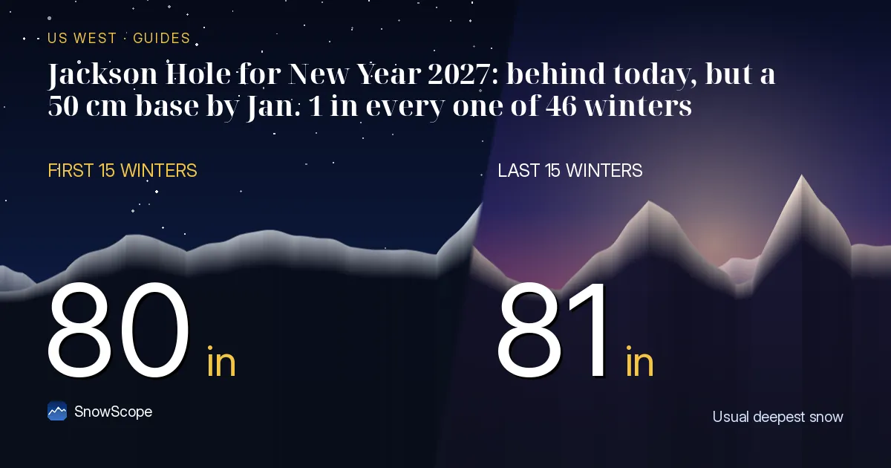
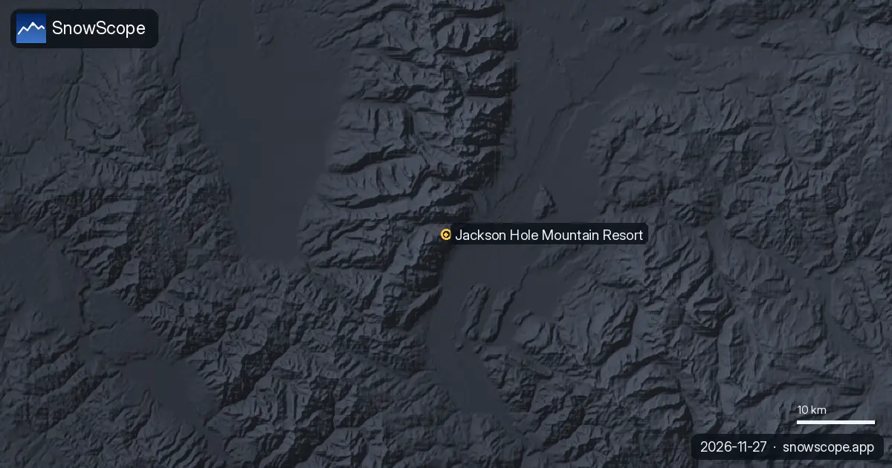
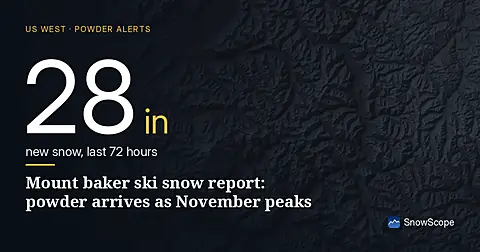

Jackson Hole for New Year 2027: behind today, but a 50 cm base by Jan. 1 in every one of 46 winters
Jackson Hole is a strong New Year bet even though it starts December behind: in every one of 46 winters on our record the mountain had more than 50 cm (20 in) of snow at 8,363 ft (2,549 m) by January 1, usually about 4 ft (121 cm). Right now it has 11 in (28 cm) at that height, well short of the 23 in (59 cm) that is normal for late November, but a storm is arriving.
See the live snow forecast for Jackson Hole Mountain Resort in the SnowScope appSnow depth, powder alerts and the 3D map, free.

Why the record matters more than today
New Year at Jackson is one of the most consistent snow dates in the Rockies. On January 1 the usual depth at 8,363 ft (2,549 m) is 4 ft (121 cm); even a poor year, one in ten, has about 32 in (82 cm), and a rich one 5.4 ft (166 cm). By December 15 the 50 cm mark had been reached in 100% of winters too.
The leanest winter peaked at 4.5 ft (138 cm) (2000-01), the biggest at 9.8 ft (300 cm) (1981-82). Neither extreme changed the New Year answer: the base was there.
This weekend's storm
The upper slopes hold 18 in (45 cm) today after 3 in (7 cm) in three days. Our forecast brings 9 in (23 cm) on Saturday, November 28, a little more on Sunday and 3 in (8 cm) on Monday, which should lift the upper mountain to about 24 in (62 cm). Over seven days the top could see 15 in (38 cm).
One storm will not make up the whole deficit, but it is the kind of start that, repeated two or three times in December, usually lands the mountain right on its normal track.
Planning New Year's week
The week between Christmas and January 2 is the busiest of the season in Teton Village. Lodging in the village and in Jackson town goes early, and the tram line is longest mid-morning. Most years the upper mountain terrain is open by then; the steepest chutes depend on the December storms.
For day-by-day numbers through December, use the Jackson Hole snow page; it shows base, mid-mountain and summit.
New Year week, day by day
History gives a clear picture of the holiday fortnight. On December 24 the usual depth at 8,363 ft (2,549 m) is about 41 in (105 cm); on December 31 it is 47 in (120 cm); by January 6 it reaches 4.1 ft (125 cm). So the base usually grows through the whole period, which is good news for anyone arriving after Christmas.
Snow on the ground on New Year's Day was recorded in 100% of winters at that height. The question each year is not whether there is snow, but how much of the steep terrain has filled in.
Cold is the other constant: late-December mornings at the top of the tram are often well below zero Fahrenheit, so the best skiing is usually from late morning, once the sun reaches the upper bowls.
Grand Targhee, on the other side of the Tetons, is the usual backup when Jackson's steep terrain is still filling in: it sits in a snowier pocket and is an easy day trip over Teton Pass in good conditions.
If the base is still thin
Should December stay dry, the higher lifts keep the best cover and grooming carries the lower runs. Christmas Day itself usually sees about 42 in (106 cm) at 8,363 ft (2,549 m), with one winter in four under 35 in (90 cm): enough for the groomers, not always for the backcountry gates.
Tips for skiers
- Book New Year beds now; the price gap between early and late booking is widest for this week.
- Ski the tram early or late in the day during the holidays and spend the middle of the day on the gondola side.
- Leave the backcountry gates for a guided day unless the December storms have built a deep base; check the avalanche forecast every morning.
- Compare with other Rockies resorts on the US West snow hub and our three-week outlook.
About these numbers
Snow numbers: SnowScope's snow map and forecast for today, and our record of 46 past winters at each resort (an estimate for the area, not the resort's own report).
Official avalanche bulletins: Bridger-Teton Avalanche Center
Cite this report
For research, teaching or the press: the numbers and charts are free to reuse under CC BY 4.0 with this citation.
SnowScope (2026), Jackson Hole for New Year 2027: behind today, but a 50 cm base by Jan. 1 in every one of 46 winters, https://snowscope.app/blog/en/2026/11/jackson-hole-new-year-2027-snow-odds-storm-this-weekend.html, accessed 2026-11-27
SnowScope (Atlas Labs). (2026, November 27). Jackson Hole for New Year 2027: behind today, but a 50 cm base by Jan. 1 in every one of 46 winters. SnowScope snow reports. https://snowscope.app/blog/en/2026/11/jackson-hole-new-year-2027-snow-odds-storm-this-weekend.html
BibTeX
@misc{snowscope2026jacksonholenewyear2027sn,
author = {{SnowScope (Atlas Labs)}},
title = {Jackson Hole for New Year 2027: behind today, but a 50 cm base by Jan. 1 in every one of 46 winters},
year = {2026},
month = nov,
howpublished = {\url{https://snowscope.app/blog/en/2026/11/jackson-hole-new-year-2027-snow-odds-storm-this-weekend.html}},
note = {Published 2026-11-27 19:28 UTC; accessed 2026-11-27}
}· CC BY 4.0 · Methods, data and tools →
Jackson Hole Mountain Resort: snow and temperature by height, this winter vs last (tools) →
Follow Jackson Hole Mountain Resort
Free: a message when fresh snow is coming, and the forecast every morning.
More snow reports

Mt. Hood shows how much a few hundred feet matter: today's snow at Timberline, Meadows, Skibowl and Mt. Bachelor, the next three days, and what December usually brings.

Western US and Canada snow forecast for the next 3 weeks from the 50-member ECMWF ensemble, NOAA GEFS and NASA MODIS: Whistler median 82 in (210 cm) by 8 December, Mammoth 21 in (53 cm), Alta 14 in (35 cm), Vail 14 in (34 cm). Lake Louise is the lean spot at 12 %.

Mt Baker received 40 cm of fresh snow on 26 Nov. Three resorts across the US West got major dumps; more snow forecast through the weekend.